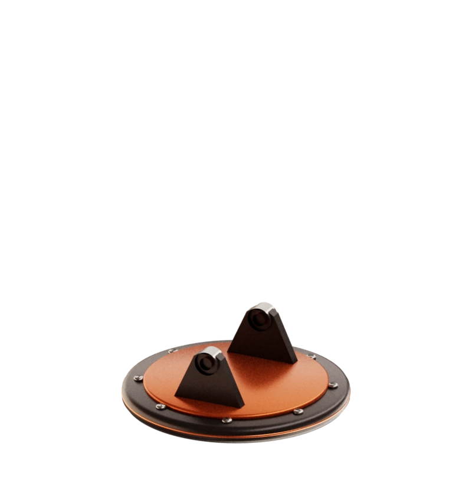
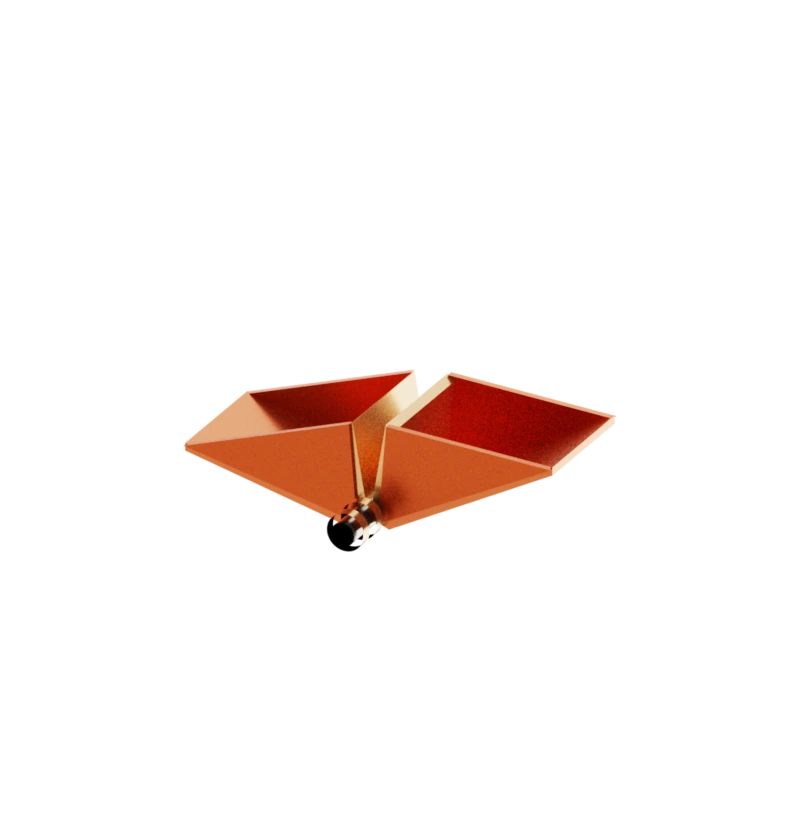
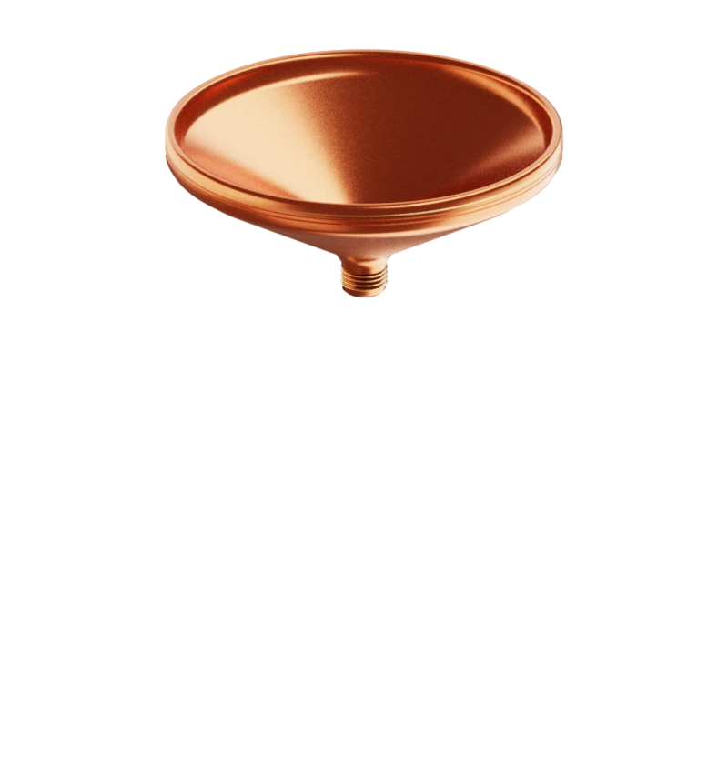

Instrumentation
Tipping-bucket
rain gauge
I built a gauge that counts bucket tips. A collector feeds two cups on a pivot. Each time a cup fills and tips, the counter records a pulse.
Study counter · 0 tips
Engineering portfolio
Electrical and electronic engineering student at the University of Nottingham Ningbo China.
Explore my work


Projects
Three things I built, with a hands-on study of the principle behind each one.
Instrumentation
I built a gauge that counts bucket tips. A collector feeds two cups on a pivot. Each time a cup fills and tips, the counter records a pulse.
Study counter · 0 tips
Embedded control
A sensor reads the line beneath the car. Changing the relative wheel speeds steers the car back towards the track.
Track study · Ready
Software systems
On OVH, Sub2API forwards requests to upstream services. Sub2API Console compares probe health, request success and time to first token to guide scheduling within each group.
Select a condition and allocate a sample batch.
The example assigns relative shares to A, B and C. They start equal. Slowing B halves its example share, and pausing B removes it from the eligible set. Counts are calculated in your browser. In the deployed console, operators can inspect per-group priority and load factor, then check the audit trail for confirmed changes.
Teaching
Try a short AI coding exercise. Turn a prompt into a routing function you can check by hand.
About
I study electrical and electronic engineering at UNNC. My projects connect sensing, motion and software, and I share what I learn through AI coding tutorials.